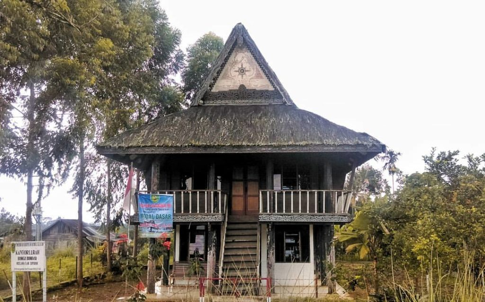
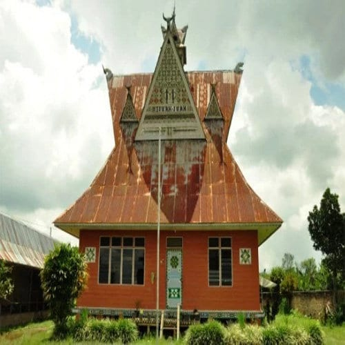

Bagas Godang
 
Banyak yang menyamakan suku Batak Angkola dengan suku Batak Mandailing, padahal keduanya tak sama dan memiliki rumah adat yang berbeda. Rumah adat Angkola yang disebut sebagai Bagas Godang terbuat dari dinding dan lantai papan, atap ijuk, dan didominasi dengan warna hitam. bangunan tradisional Angkola yang terlihat mirip dengan bangunan tradisional Batak Toba. Hal itu terlihat dari bentuk atap segitiga dan bentuknya misalnya bahan materialnya atap menggunakan ijuk. Sama halnya dengan struktur yang menggunakan sistem persambungan kayu yakni konstruksi rangka tersusun dan menggunakan kolom yang berbentuk bulat
Arsitektur Tradisional Batak Angkola
Sopo Godang pada Suku Batak Angkola berfungsi sebagai tempat Raja dan masyarakat untuk Mufakat Dalihan na Tolu (adat) dan Martahi (kepentingan desa). Disetiap desa atau yang disebut “huta” pada suku angkola harus mempunyai sopo godang yang letaknya berada di tengah-tengah desa. Sopo Godang pada Suku Batak Angkola berfungsi sebagai tempat Raja dan masyarakat untuk Mufakat Dalihan na Tolu (adat) dan Martahi (kepentingan desa). Disetiap desa atau yang disebut “huta” pada suku angkola harus mempunyai sopo godang yang letaknya berada di tengah-tengah desa.